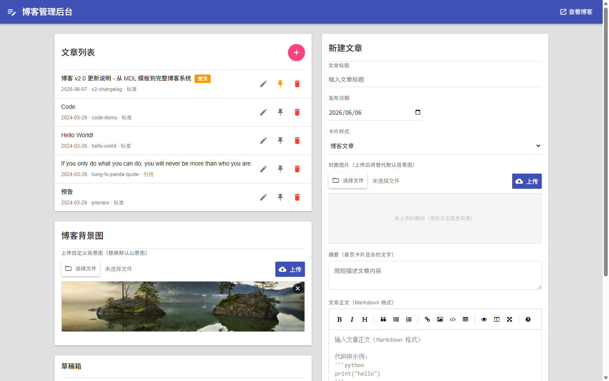
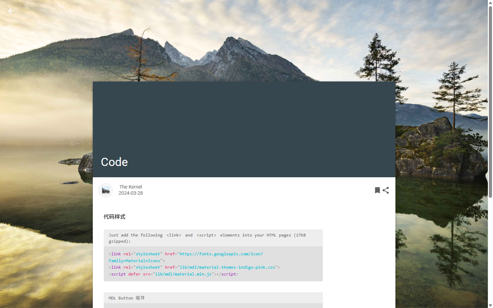
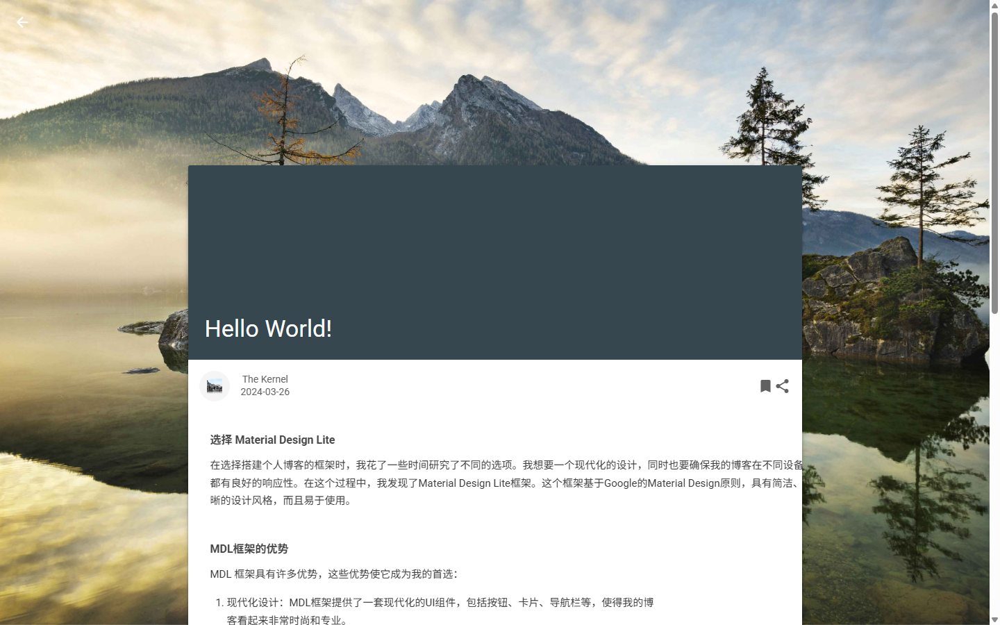
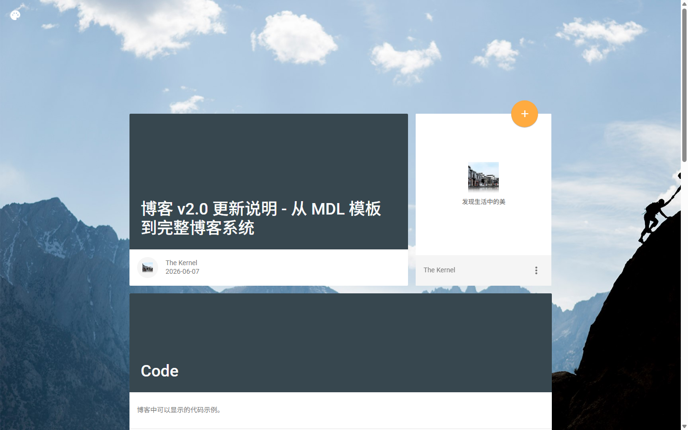

博客 v2.0 更新说明 - 从 MDL 模板到完整博客系统
版本概述
经过多个迭代周期的开发，本博客完成了从基础 MDL 模板到完整博客系统的全面重构。本文记录了所有新增功能与修复的问题，并附带关键代码片段和界面截图。
1. CDN 迁移到本地资源
原博客依赖 code.getmdl.io CDN 加载 MDL 框架资源，但该 CDN 已停止服务，导致页面无法正常渲染。我们将所有 MDL 资源本地化到 lib/mdl/ 目录，彻底解决了外部依赖不可控的问题。
<!-- 旧：CDN 引用（已失效） -->
<link rel="stylesheet" href="https://code.getmdl.io/1.3.0/material.indigo-pink.min.css">
<script defer src="https://code.getmdl.io/1.3.0/material.min.js"></script>
<!-- 新：本地引用（稳定可靠） -->
<link rel="stylesheet" href="lib/mdl/material-themes-grey-orange.css">
<script src="lib/mdl/material.min.js"></script>同时将 MDL 默认的 Indigo-Pink 主题替换为 Grey-Orange 主题，视觉上更专业沉稳。
2. 博客管理后台
从零构建了完整的 Flask 后端 + 管理界面，支持文章的增删改查、置顶、封面图片上传、背景图管理等功能。管理后台遵循 Google Material Design 1 规范设计。

@app.route('/api/posts', methods=['POST'])
def api_create_post():
data = load_data()
body = request.json
post_id = body.get('id') or body.get('title', '').lower().strip()
post_id = re.sub(r'[^a-z0-9\u4e00-\u9fff]+', '-', post_id).strip('-')
post = {
'id': post_id,
'title': body.get('title', 'No Title'),
'date': body.get('date', datetime.now().strftime('%Y-%m-%d')),
'summary': body.get('summary', ''),
'content': body.get('content', ''),
'cardFormat': body.get('cardFormat', 'standard'),
'coverImage': body.get('coverImage', ''),
}
data['posts'].append(post)
save_data(data)
generate_all()
return jsonify({'ok': True, 'post': post})3. 代码高亮系统（Prism + click-to-copy）
集成了 Prism.js 代码高亮引擎，支持 17 种编程语言。自定义了 code-with-text 格式：灰色圆角容器 + 语言标签 + 语法高亮 + 点击复制功能。同时支持两种代码块语法：
- [code:lang|label]...[/code] — 旧格式，向后兼容
- ```lang ... ``` — Markdown fenced code blocks，新推荐格式
def markdown_to_html(content):
def replace_fenced_code(match):
lang = match.group(1) or ''
code = match.group(2)
code_escaped = (code
.replace('&', '&')
.replace('<', '<')
.replace('>', '>')
.replace('"', '"'))
prism_lang = lang_map.get(lang.lower(), lang.lower()) if lang else 'markup'
label = lang if lang else 'code'
return f'<div class="code-with-text">{label}\n' \
f'<pre class="language-{prism_lang}">' \
f'<code class="language-{prism_lang}">{code_escaped}</code></pre>\n' \
f'</div>'
fenced_pattern = r'```(\w*)\r?\n([\s\S]*?)\r?\n```'
content = re.sub(fenced_pattern, replace_fenced_code, content)
md = markdown.Markdown(extensions=['tables', 'nl2br'], output_format='html5')
return md.convert(content)
4. 标准卡片 vs 引用卡片
区分了标准文章卡片和引用卡片两种格式。引用卡片用于展示名言警句，不会生成详情页，不参与文章导航，仅在首页展示。
# 只为标准格式文章生成详情页
nav_posts = [p for p in sorted_posts if p.get('cardFormat', 'standard') != 'quote']
# 引用卡片不生成链接
if post.get('cardFormat', 'standard') == 'quote':
card_class = 'card-quote'
# 不添加 <a> 链接
else:
card_class = 'card-article'
# 添加文章详情页链接5. 动态文章导航
文章详情页底部增加了"前一篇/后一篇"导航，自动按照发布日期排序。最新文章左侧显示"返回首页"，最旧文章右侧显示"返回首页"。鼠标悬停时 tooltip 显示相邻文章标题和日期。
# all_posts sorted by date descending: [newest, ..., current, ..., oldest]
if post_index == 0:
newer_link = '../../index.html'
newer_text = '返回首页'
newer_title = '返回博客首页'
else:
newer_post = all_posts[post_index - 1]
newer_link = f"{newer_post['id']}.html"
newer_text = '前一篇'
newer_title = f"{newer_post['title']} ({newer_post['date']})"6. Markdown 编辑器 + 草稿系统
集成了 EasyMDE Markdown 编辑器，支持侧边实时预览、工具栏快捷操作。新增草稿系统，可以保存未完成的文章，稍后继续编辑。
@app.route('/api/drafts', methods=['POST'])
def api_save_draft():
data = load_data()
body = request.json
draft = {
'id': body.get('id', str(uuid.uuid4())[:8]),
'title': body.get('title', ''),
'content': body.get('content', ''),
'savedAt': datetime.now().isoformat()
}
if 'drafts' not in data:
data['drafts'] = []
data['drafts'].append(draft)
save_data(data)
return jsonify({'ok': True, 'draft': draft})7. 服务端预览（1:1 匹配发布页面）
预览功能通过服务端渲染，使用与实际发布页面完全相同的模板和 Markdown 处理流程，确保"所见即所得"。关键修复：预览页面的 URL 为 /api/preview，所有静态资源路径必须使用绝对路径（以 / 开头），否则浏览器会将相对路径错误解析为 /api/lib/mdl/...。

<!-- Wrong: relative path resolved as /api/styles.css -->
<link rel="stylesheet" href="styles.css">
<!-- Correct: absolute path always resolves correctly -->
<link rel="stylesheet" href="/styles.css">8. CSS 类名重构
将 MDL 模板原始的 demo-* 类名和随意命名（如 on-the-road-again、amazing、chroma）统一为语义化名称：
demo-blog→blogdemo-blog--blogpost→blog--articledemo-back→back-btndemo-nav/demo-nav__button→article-nav/article-nav__btn- 封面类名 →
card-article/card-quote/sidebar-card
同时从数据模型中移除了 coverClass 字段，简化为 cardFormat（standard/quote）+ coverImage 两个字段。
9. 其他修复
返回按钮白色修复：MDL 的 mdl-button--colored 会应用 accent 色而非白色，改用 mdl-color--white + mdl-color-text--grey-900 组合实现白底灰字的返回按钮。
无封面卡片背景色：移除默认封面图片（images/road.jpg），未上传封面的卡片显示 #37474f（blue-grey 800）实色背景，而非 MDL 主题的 mdl-color--primary-dark（灰色，不美观）。
文件上传按钮修复：将 <button onclick="document.getElementById().click()"> 改为 <label for="fileInput">，解决跨浏览器兼容性问题，同时修复了 flex 容器中 label 按钮文字不居中的 bug。
编辑提示栏优化：解决长标题文章导致"取消"按钮换行的问题，使用 text-overflow: ellipsis 截断标题文本，"取消"按钮设置 white-space: nowrap; flex-shrink: 0; 确保始终单行显示。
/* Before: justify-content causes button to wrap */
.edit-notice {
display: flex;
justify-content: space-between;
}
/* After: title truncates, button never shrinks */
.edit-notice {
display: flex;
align-items: center;
gap: 12px;
}
.edit-notice span {
overflow: hidden;
text-overflow: ellipsis;
white-space: nowrap;
min-width: 0;
flex: 1;
}
.edit-notice .md-btn {
white-space: nowrap;
flex-shrink: 0;
}10. 博客背景图管理
管理后台新增背景图上传/删除功能，自定义背景图存储在 blog/backgrounds/ 目录，通过 CSS body::before 伪元素覆盖默认山景图。

总结
本次重构涉及以下核心改动：
- CDN → 本地资源迁移 + 主题切换
- Flask 管理后端（文章 CRUD、封面上传、背景图管理、草稿系统）
- Prism 代码高亮 +
code-with-text格式 + click-to-copy - 标准/引用卡片分离（引用不生成详情页）
- 动态文章导航（前一篇/后一篇 + tooltip）
- EasyMDE Markdown 编辑器 + 服务端 1:1 预览
- CSS 类名全面语义化重构
- 多项 UI bug 修复（按钮居中、换行、路径、颜色）
如果你也在用 MDL 搭建博客，希望这些实践能给你一些参考。有问题欢迎留言讨论！